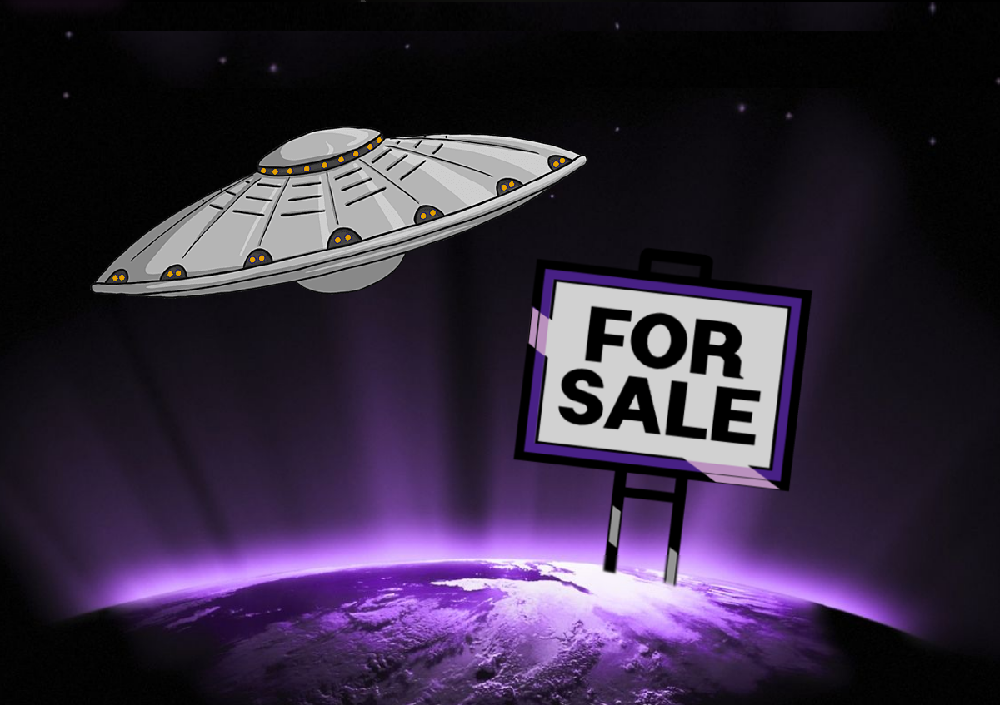

in: Missing Episodes
Planet for Sale

| Wave | Pop Goes the Cosmos |
| Episode | 1 |
| Written By | Lewis Christian |
| Airdate | 1 April, 2020 |
| Next | The Underwhelming Menace |
‘Oh blimey!’
― The Doctor
Story
The Doctor is a few centuries into his retirement on the Planet Equilibrium, after finally defeating all the evils of the universe. However, universal peace can’t last forever.
One snowy Wednesday morning, a mysterious being known only as The Messenger appears on Equilibrium and heads out in search of the Doctor’s caravan.
The Doctor is rudely awoken by a knock at the door – the first knock in three hundred years. The unnamed Messenger tells the Doctor of all the new evils, monsters and baddies filling up the universe and their desire to cause endless chaos. The era of tranquillity is over, and the Doctor feels obliged to take up the mantle of heroic cosmic adventurer once again.
Before he can return to his adventures, however, there’s a small matter of trying to flog the planet he’s been living on, in order to afford space petrol for his TARDIS.
Characters
The Doctor ― The Doctor has been retired and alone for at least three hundred years, living quietly in a caravan on the Planet Equilibrium. His TARDIS is out of space petrol, and he only has 130 Credits to his name.
The Messenger ― The Messenger is an ominous shadowy being. He seems to have a vast knowledge of the universe, and can flicker in and out of existence at will. He refuses to show his true form because he is ashamed that he’s going bald.
The Daleks ― The Daleks are one of the first to book a viewing for Equilibrium, needing a new base for their evil operations. They reveal that they intend to rename the planet to ‘New Skaro’ to annoy their creator, Davros. In this story, the Daleks are led by the Dalek Emperor.
Harold ― Harold is the neighbour of the Doctor, and has been living next door for at least a century. He is so arrogant and irritating that the Doctor refuses to ever acknowledge him.
Cast
Behind the Scenes
This was all edited on an Apple Mac at Owen's school over the course of a few months. It was hell.